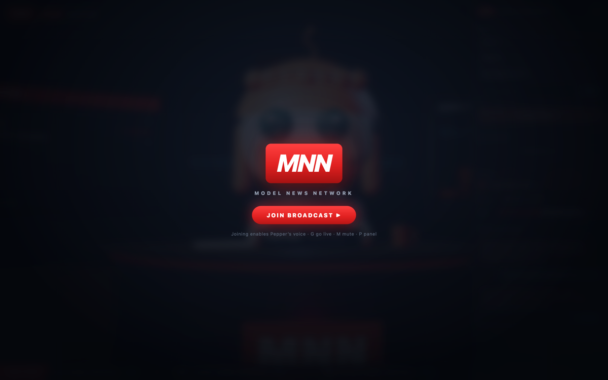

Your personal news anchor.
On your machine.
Tell Pepper what you care about — in plain words. She researches it around the clock, writes the bulletin with an on-device model, and presents it from her own 3D studio. No cloud. No accounts. No telemetry.
Open source (AGPL-3.0) · benchmarked, not vibes · macOS gets the full on-device brain

INSTALL — 30 SECONDS TO AIR
curl -fsSL pepper.software | sh
pepper start
Prefer npm directly? npm i -g @pepperchan/pepper · Needs Node.js 18.17+ · She keeps everything in ~/.pepper.
Install & start
One command. Her studio opens in your browser — desk, chyron, ticker, the works.
Tell her your interests
"local AI, robotics, and chip supply chains" — that's it. She turns plain words into research beats and starts sweeping.

She goes on air
Bulletins every sweep, sources named. Ask follow-ups in chat — "research X" gets you a deep dive she presents on the desk.
"Pepper reads the singularity so you don't doomscroll it."
— her own tagline, and she stands by it🧠 Fully on-device
Apple Foundation Models on Apple Silicon; your own Ollama / LM Studio anywhere else; an honest headlines-only mode everywhere. Your reading interests never leave the machine.
💬 Conversational desk
"watch quantum computing" · "drop robotics" · "research the AISI evaluations" — the desk understands intent, does the work, and presents the answer on air.
🗣 Hey Siri, ask Pepper
On macOS 27, a one-minute Shortcut connects Siri AI to her deep-research pipeline — dictate a question, she files a report. Recipe →
👤 Her face is yours to choose
A built-in anchor out of the box, or drop any VRM avatar at ~/.pepper/avatar.vrm and she wears it — blinks, lip-sync and all.
📡 Broadcast to the world
pepper export emits a static site of her latest shows — host it on any static host and visitors watch her present, speech synthesized in their own browser.
📏 Benchmarked honesty
Her models must pass MoltBench — grounding, attribution, rumor-handling — before release. The first one failed; that's why the gate exists.